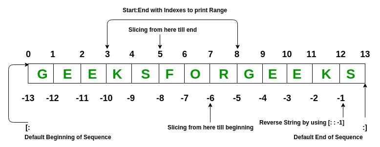
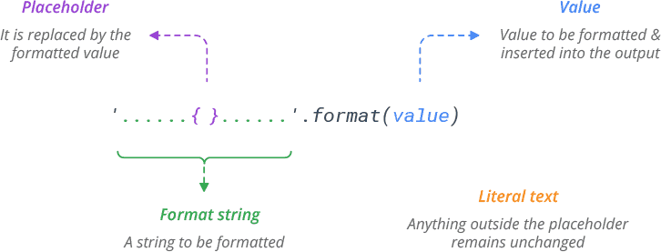

ENGR 1330 Computational Thinking with Data Science
Copyright © 2021 Theodore G. Cleveland and Farhang Forghanparast
Last GitHub Commit Date: 29 August 2021
4: User Interaction¶
The
input()functiontriple quotes
escape characters
The
print()function
Objectives¶
Develop awareness of interactive inputs
Implement interactive inputs to generalize solution tools
Develop awareness of output formatting to improve readability
Implement output formats
Input and Output¶
Useful programs take input and generate output
Command-line interface
Graphical user interface (GUI)
Files
Network sources
Databases
User Interaction¶
Until this point we have explicitly specified input values for variables (and constants) in a script; now lets leverage intrinsic functions that lets us makes use of variables. We’ll revisit earlier examples, but this time we’ll make them interactive. Instead of just computing and sending output, we want read into variables values that may change from time to time. In order to do that, our script needs to be able to prompt us for information and display them on the screen.
Note
In this Jupyter Book, interactive scripts don’t render completely, so they are inserted as cut-and-paste blocks for running in your Jupyter Book.
This whole process is the essence of user interaction, and from the simple examples herein, one builds more complex scripts.
Command-line input¶
Function
input(prompt)prints the optional prompt on the command line, the prompt can be a string variable, or just a string literal
waits for the user to type something
the text is sent to the program only after the user types enter/return
the entered data is always interpreted as text, even if it’s numeric
About the input() function¶
Consider the script below
MyName=input('What is your name ?')
print(MyName)
The input method sent the string ‘What is your name ?’ to the screen, and then waited for the user to reply. Upon reply, the input supplied was captured and then placed into the variable named MyName.
Then the next statement, used the print() method to print the contents of MyName back to the screen. From this simple structure we can create quite useful input and output.
As a matter of good practice, we should explicitly type the input variable, as shown below which takes the input stream and converts it into a string.
MyName=str(input('What is your name ?'))
print(MyName)
Below we prompt for a second input, in this case the user’s age, which will be put into an integer. As a sdie note, we are not error checking, so if an input stream that cannot be made into an integer is suppplied we will get an exception warning or an error message.
MyAge=int(input('How old are you ? '))
print(MyAge)
More examples
# Try getting some input
value = input( "Please enter a value: ") # input with a prompt
# print(type(value)) # get data type -- note always a string
# input() # without the prompt
# print(hex(id(value))) # get memory location of value in hex - sometimes useful for squashing bugs
value #return contents
# building the prompt
string_variable = 'Enter a value'
value = input(string_variable)
value
Command-line output¶
Function
print()prints the value(s) passed to it
automatically converts data values to strings
goes to the next line by default
separates values with space by default
optional arguments can set different separator and end of line values
Format output using string formatting functions
About the print() function¶
The print() function is used to display information to users.
It accepts zero or more expressions as parameters, separated by commas.
Consider the statement below, how many parameters are in the parameter list?
MyName = 'Taco Bell'
MyAge = 66
print ("Hello World, my name is", MyName, "and I am", MyAge, "years old.")
Hello World, my name is Taco Bell and I am 66 years old.
There are five parameters;
“Hello World, my name is”
MyName
“and I am”
MyAge
“years old”
Three of the parameters are string literals and are enclosed in quote marks, two are variables that are rendered as strings.
Some more examples
# Examples of output
myvalue = 77 # suppress and use input() if you want!
print("Here is a message." )
print("Here is a value:", myvalue ) # where did val come from?
print("Don't go to next line.", end = ' ' )
print("more text same line")
print("more text new line ")
Here is a message.
Here is a value: 77
Don't go to next line. more text same line
more text new line
About Strings¶
A string is a complex data type
a sequence of characters that is immutable
individual characters are identified using indexing syntax:
s[position]

the general
len()function returns the length of a string
# Experiment with indexing syntax
s = "birds"
print(s[3])
print(s[-1])
print(len(s))
type(s[3])
d
s
5
str
String Operators¶
+concatenate strings==!=test the equality of strings<<=>>=compare strings lexiographically (alphabetically sort of)
# String operators
s1 = "cat"
s2 = "dog"
s3 = "cat"
print(s1 + s2)
print(s1 == s3)
print(s2 < s1)
print("Dog" < "cat")
Strings are compared using lexiographic ranking https://en.wikipedia.org/wiki/Lexicographic_order.
Special and unprintable characters¶
Represented with escape sequences
preceded by backslash
\Common special characters
Character |
Escape Sequence |
|---|---|
newline |
|
tab |
|
backslash |
|
quotes |
|
# Escape sequences
print("hello\n")
print("1\t2")
print("\xEA")
Note
The examples below use assigned values to illustrate escape characters. You can supresses the first two lines and use input() if you wish - the variable names are same as those above.
About Escape Sequences¶
Sometimes we may need to print some special “unprintable” characters such as a tab or a newline.
In this case, you need to use the \ (backslash) character to escape characters that otherwise have a different meaning. For instance to print a tab, we type the backslash character before the letter t, like this \t using our earlier example we have:
MyName = 'Taco Bell'
MyAge = 66
print ("Hello\t World, my name is {} and I am {} years old.".format(MyName,MyAge))
Hello World, my name is Taco Bell and I am 66 years old.
Here are a few more examples:
#newline after World
print ("Hello World\n, my name is {} and I am {} years old.".format(MyName,MyAge))
Hello World
, my name is Taco Bell and I am 66 years old.
# backslash after World
print ("Hello World\\, my name is {} and I am {} years old.".format(MyName,MyAge))
Hello World\, my name is Taco Bell and I am 66 years old.
# embedded quotes in the string literal
print ("I am 5\'9\" tall")
I am 5'9" tall
If you do not want characters preceded by the
\character to be interpreted as special characters, you can use raw strings by adding anrbefore the first quote. For instance, if you do not want\tto be interpreted as a tab in the string literal “Hello\tWorld”, you would type
print(r"Hello\tWorld")
Hello\tWorld
String slicing¶
expanded indexing
a slice of a string is a new string, composed of characters from the initial string
Syntax |
Result |
|---|---|
|
a single character |
|
a substring |
|
a selection of characters |
the end position is not inclusive (up to but not including end)
the step can be positive or negative
a negative step proceeds backwards through the string
Empty and default values in slicing¶
the default step is
1the default end is
start+1an empty value for end means the end of the string (in the step direction)
an empty value for start means the start of the string (in the step direction)
# What will this do?
s[-1::-1]
String functions¶
Name |
Behavior |
|---|---|
s.split() |
Split a string into pieces based on a delimiter |
s.strip() |
Remove leading/trailing whitespace or other characters |
s.upper() |
Convert a string to uppercase |
s.lower() |
Convert a string to lowercase |
s.isnumeric() |
Return True if a string is numeric |
s.find() |
Return the index of a substring |
s.replace() |
Replace one substring with another |
Many, many, more … |
Look them up as needed |
# some string functions
s = "hello"
print(s.upper())
print(s)
str = s.upper()
print(str)
str = "I am a string."
print(str.replace("am", "am not"))
"222".isnumeric()
HELLO
hello
HELLO
I am not a string.
True
s = "Fox. Socks. Box. Knox. Knox in box. Fox in socks."
print(s[1])
print(s[-1])
print(s[:3])
print(s.replace("ocks", "ox"))
print(s[0] + s[5] + s[12])
o
.
Fox
Fox. Sox. Box. Knox. Knox in box. Fox in sox.
FSB
The % operator¶
Strings can be formatted using the % operator. This gives you greater control over how you want your string to be displayed and stored. The syntax for using the % operator is “string to be formatted” %(values or variables to be inserted into string, separated by commas)
An example using the string constructor (%) form using a placeholder in the print function call is:
print ("Hello World, my name is %s and I am %s years old." %(MyName,MyAge))
Hello World, my name is Taco Bell and I am 66 years old.
Notice the syntax above. The contents of the two variables are placed in the locations within the string indicated by the %s symbol, the tuple (MyName,MyAge) is parsed using this placeholder and converted into a string by the trailing s in the %s indicator.
See what happens if we change the second %s into %f and run the script:
print ("Hello World, my name is %s and I am %f years old." %(MyName,MyAge))
Hello World, my name is Taco Bell and I am 66.000000 years old.
The change to %f turns the rendered tuple value into a float. Using these structures gives us a lot of output flexibility.
The
%fformatter can also be used to place the decimal by preceeding the f with the decimal point and the number of digits after the decimal you want to render as in:
print ("Hello World, my name is %s and I am %.1f years old." %(MyName,MyAge))
Hello World, my name is Taco Bell and I am 66.0 years old.
About the format() method¶
Similar to the %operator structure there is a format() method. Using the same example, the %s symbol is replaced by a pair of curly brackets {} playing the same placeholder role, and the format keyword precedes the tuple as
print ("Hello World, my name is {} and I am {} years old.".format(MyName,MyAge))
Hello World, my name is Taco Bell and I am 66 years old.
Observe the keyword format is joined to the string with a dot notation, because format is a formal method associated with all strings, and it is attached when the string literal is created.

In this example the arguments to the method are the two variables, but other arguments and decorators are possible allowing for elaborate outputs.
Triple quotes¶
If you need to display a long message, you can use the triple-quote symbol (‘’’ or “””) to span the message over multiple lines. For instance:
print ('''Hello World, my name is {} and I am a resturant
that is over {} years old. We serve sodium chloride infused
lipids in a variety of shapes'''.format(MyName,MyAge))
Hello World, my name is Taco Bell and I am a resturant
that is over 66 years old. We serve sodium chloride infused
lipids in a variety of shapes
Future Versions¶
repr and map methods
color codes
References¶
Computational and Inferential Thinking Ani Adhikari and John DeNero, Computational and Inferential Thinking, The Foundations of Data Science, Creative Commons Attribution-NonCommercial-NoDerivatives 4.0 International (CC BY-NC-ND) Chapters 3-6 https://www.inferentialthinking.com/chapters/03/programming-in-python.html
LearnPython.org (Interactive Tutorial) (https://www.learnpython.org/) Short, interactive tutorial for those who just need a quick way to pick up Python syntax.
Brian Christian and Tom Griffiths (2016) ALGORITHMS TO LIVE BY: The Computer Science of Human Decisions Henry Holt and Co. (https://www.amazon.com/Algorithms-Live-Computer-Science-Decisions/dp/1627790365)
Learn Python in One Day and Learn It Well. Python for Beginners with Hands-on Project. (Learn Coding Fast with Hands-On Project Book – Kindle Edition by LCF Publishing (Author), Jamie Chan https://www.amazon.com/Python-2nd-Beginners-Hands-Project-ebook/dp/B071Z2Q6TQ/ref=sr_1_3?dchild=1&keywords=learn+python+in+a+day&qid=1611108340&sr=8-3
Learn Python the Hard Way (Online Book) (https://learnpythonthehardway.org/book/) Recommended for beginners who want a complete course in programming with Python.
How to Learn Python for Data Science, The Self-Starter Way (https://elitedatascience.com/learn-python-for-data-science)
String Literals https://bic-berkeley.github.io/psych-214-fall-2016/string_literals.html
Tutorial on
input()andprint()functions https://www.programiz.com/python-programming/input-output-importLexiographic Ordering https://en.wikipedia.org/wiki/Lexicographic_order
Laboratory 4¶
Examine (click) Laboratory 0 as a webpage at Laboratory 4.html
Download (right-click, save target as …) Laboratory 0 as a jupyterlab notebook from Laboratory 4.ipynb
Exercise Set 4¶
Examine (click) Exercise Set 0 as a webpage at Exercise 4.html
Download (right-click, save target as …) Exercise Set 0 as a jupyterlab notebook at Exercise Set 4.ipynb